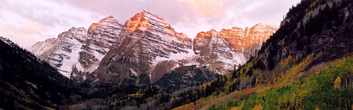

Lab Introduction

Robert BodyGrasshopper Phenology and Climate Change
Over the last century, average global surface temperatures have increased by 0.74°C. This warming has had a variety of impacts on species; affecting their development, distributions and relative abundances. In this lab, using real weather station data, we explore how climate has changed along an elevational gradient in the Front Range of Colorado over the last 50 years. We also compare the results of a historical survey to a modern resurvey of grasshoppers collected near each of these weather stations to explore how the timing to adulthood of grasshoppers has been affected by recent warming. To understand why grasshopper phenology has been altered, we introduce growing degree days (GDDs) as a measure of the thermal energy available to plants and ectotherms, such as insects and reptiles, for development. Finally, we use the GDDs concept to make predictions about grasshopper development given future warming scenarios.
Goals:
- To introduce students to the effects of climate change on organisms, the life-zone concept, and growing degree days
- To allow students access to actual climate and survey data to evaluate recent climate change and its effects on grasshopper development
- To provide students the tools and concepts necessary to understand and evaluate how future climate change may affect the development, number of generations and distribution of organisms
Key terms: Growing degree days, Life zones, Phenology
The prelab provides necessary background to the main themes and concepts that will be covered in the lab. Click on each link below to learn about each topic. Complete the prelab questionnaire that follows the introductory topics to be sure that you are familiar with each of the key concepts.
Life Zones Climate Change Growing degree days
Lab:
Once you have read the prelab sections and answered the prelab questionnaires, you are ready for your instructor to guide you through this exercise in lab.
Grasshoppers and Climate Change Lab [PDF 369 KB]
Yearly Averages and Max & Min Data [Excel spreadsheet, 256 KB]